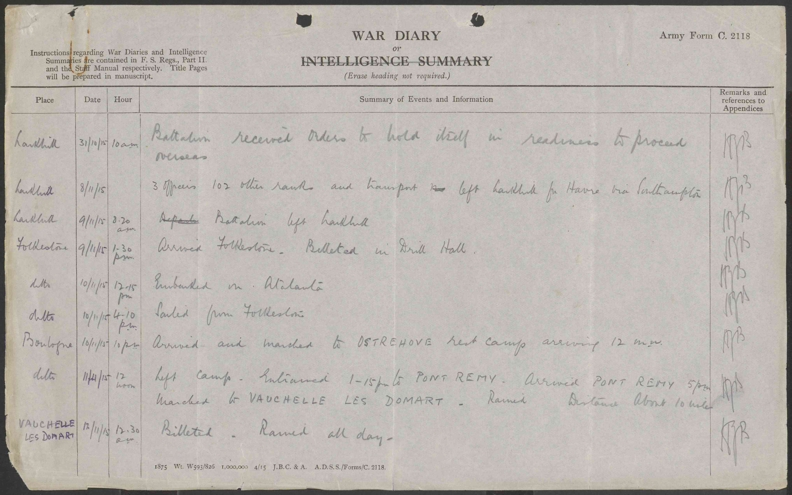
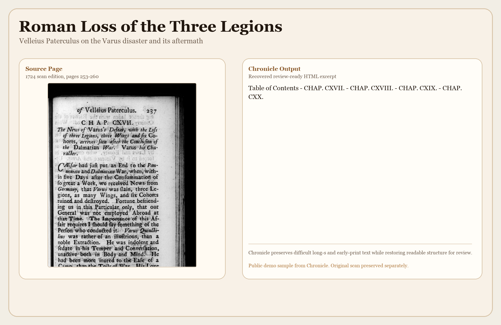

macOS
Download for Mac
For Apple silicon Macs. Download and extract the ZIP, then read the included first-launch instructions.
macOS 12 or later; Apple silicon (M-series).
Turn difficult scans and documents into readable, accessible text.
Chronicle is open-source software. View the source code on GitHub.
Chronicle uses AI, primarily Google Gemini, to read scans and organise the text into headings, paragraphs and tables. It can work with handwriting, archives, newspapers, books and comics. Save the result as HTML, Word, plain text or another supported format.
Designed for keyboard and screen-reader use. AI can misread, omit, or invent text. Check important results against the original. Read the AI accuracy and privacy disclaimer.
Choose your computer below. The ZIP downloads directly; no GitHub account is needed.
For Apple silicon Macs. Download and extract the ZIP, then read the included first-launch instructions.
macOS 12 or later; Apple silicon (M-series).
For 64-bit Windows. Download and extract the ZIP before opening Chronicle.
Windows 10 or later; 64-bit (x64).
Online processing sends document content to your chosen provider. Optional Private Offline Mode requires you to install Ollama and download a local model separately. It is intended for simple, clear, typed documents, not difficult scans or complex layouts. See the offline setup and limitations.
Compare source pages with saved Chronicle results, including errors that still need review. Each example has a text description and an accessible result page. Choose a tab below; use the arrow keys to move between tabs.





Donations are optional. They help pay for development, accessibility testing and API use. You can give once or sponsor the project monthly. GitHub Sponsors requires a GitHub account.
Chronicle is developed by Michael Marshall. Questions, feedback, and bug reports are welcome.
The email link opens your email app. No GitHub account is needed to email Michael.
GitHub requires an account to post. Messages there are public; do not include private documents, API keys, or other sensitive information.
Why I built Chronicle · AI accuracy and privacy disclaimer · Source code